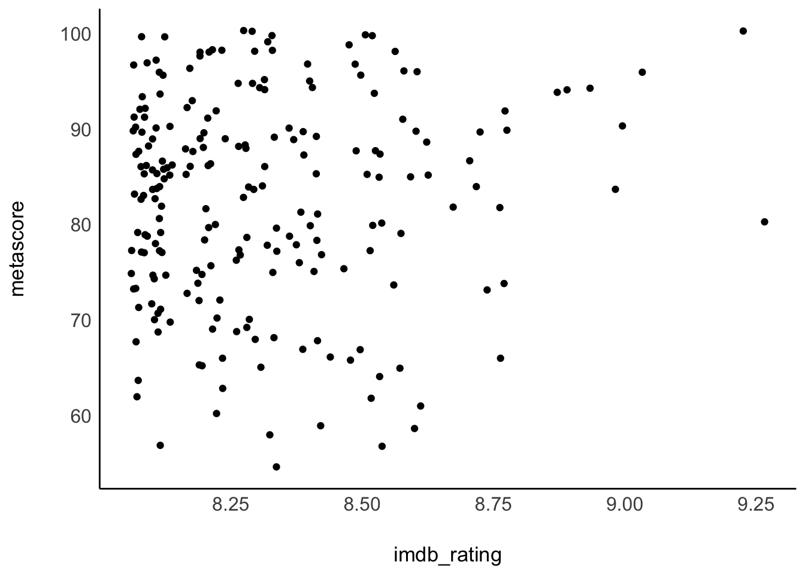
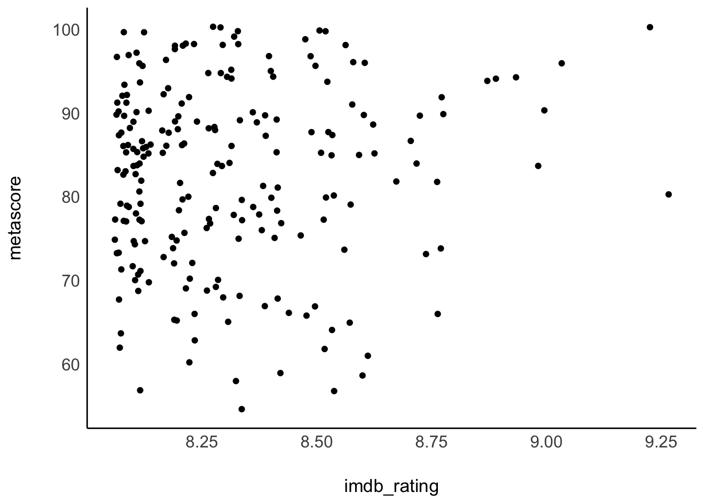
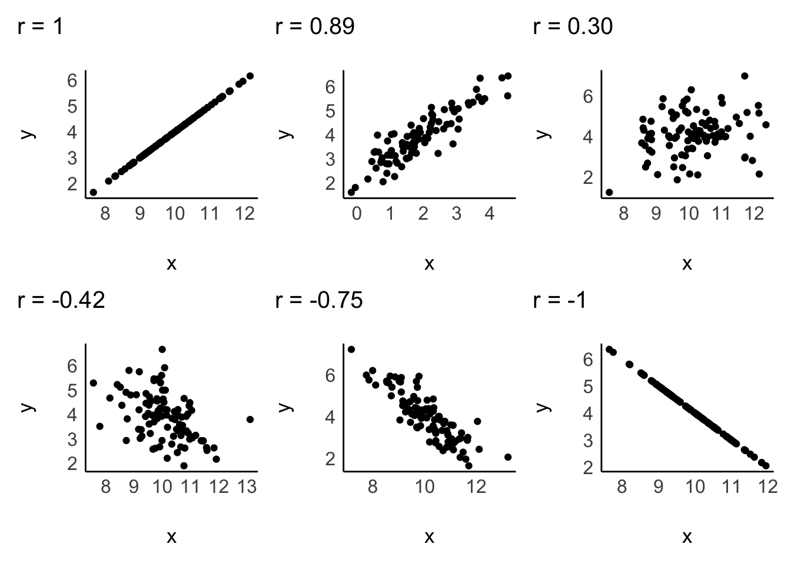
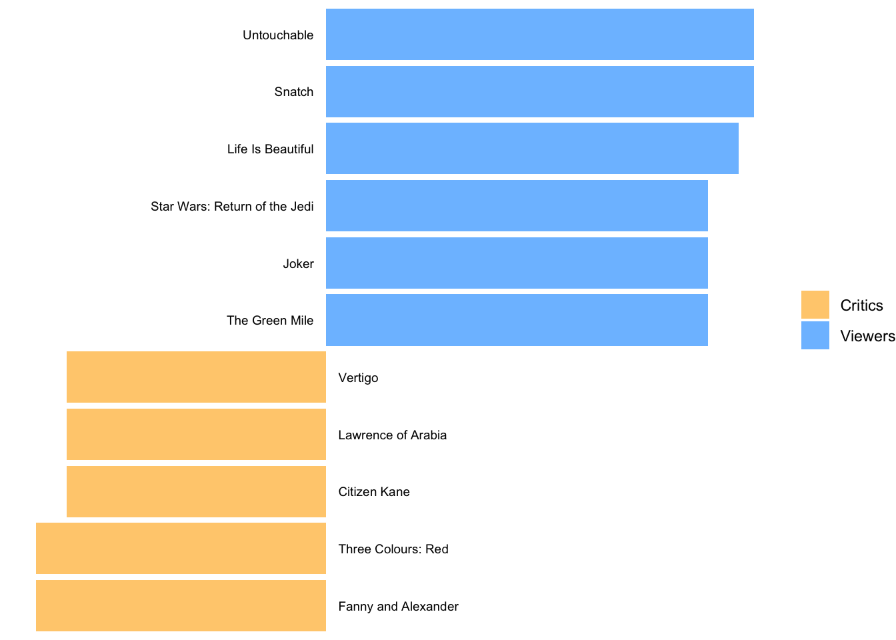
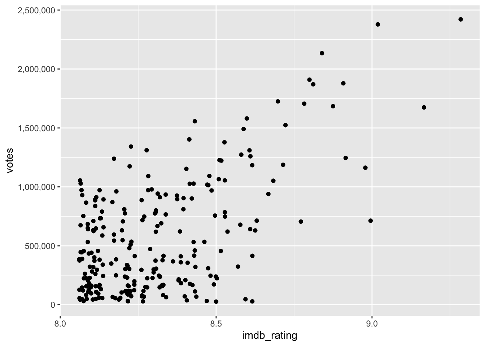
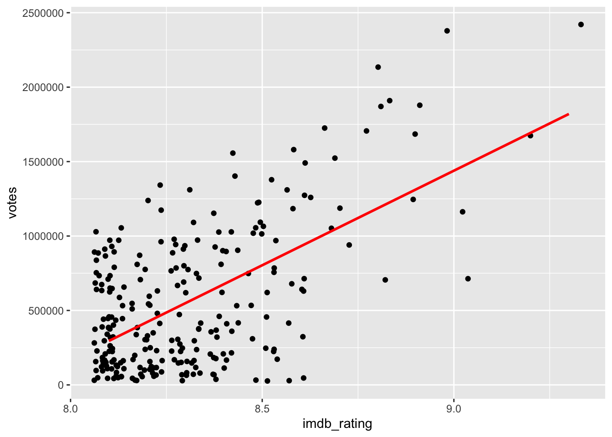
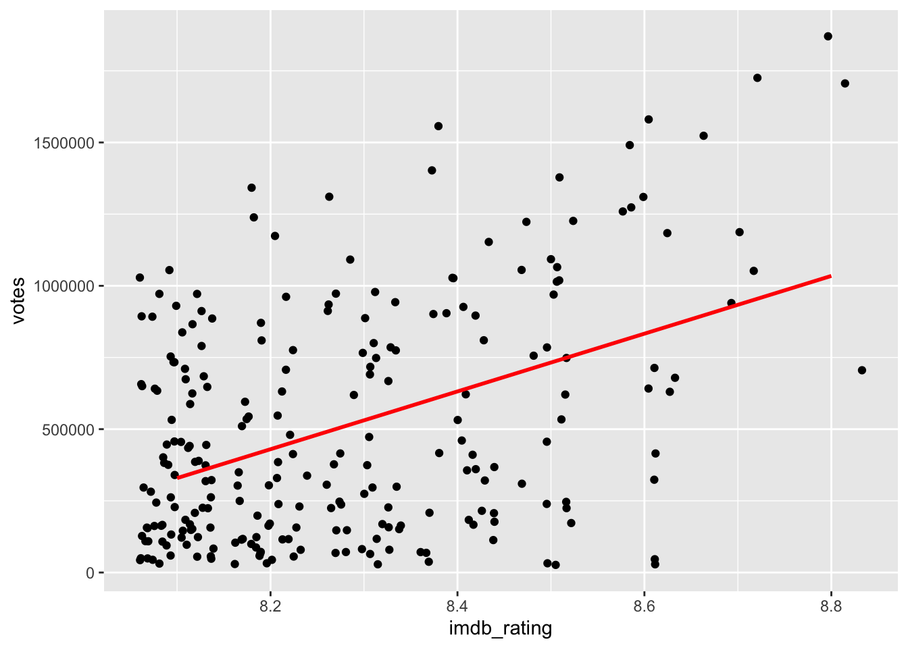
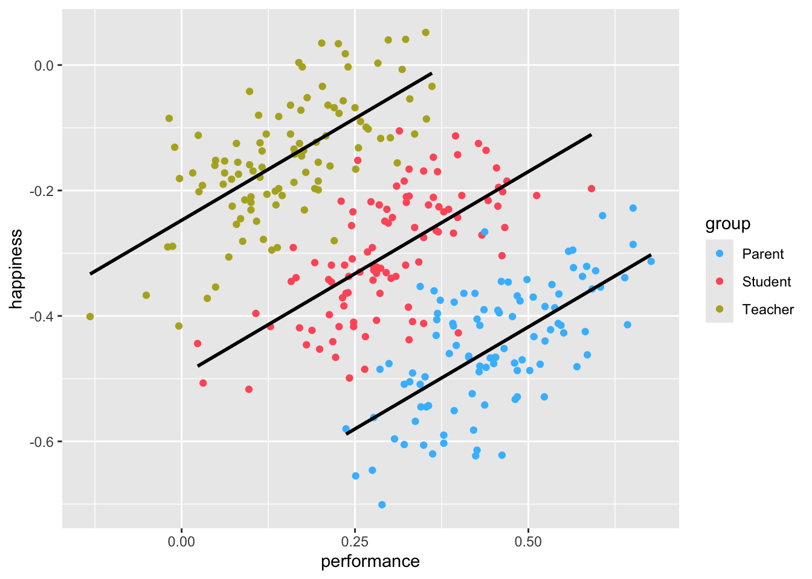

imdb_top_250 |>
filter(!is.na(metascore)) |>
ggplot(aes(imdb_rating, metascore)) +
geom_jitter() +
see::theme_modern()
Sometimes counting and measuring means, medians, and standard deviations is not enough because they are all based on a single variable. Instead, we might have questions related to the relationship of two or more variables. In this section, we will explore how correlations can (and kind of cannot - see Chapter @ref(simpsons-paradox)) provide insights into the following questions:
Do movie viewers agree with movie critics regarding the rating of movies?
Do popular movies receive more votes from users than less popular movies?
Do movies with more votes also make more money?
There are many different ways to compute the correlation, and it partially depends on the type of data you want to relate to each other. The ‘Pearson’s correlation’ is by far the most frequently used correlation technique for normally distributed data. On the other hand, if data is not normally distributed, we can opt for the ‘Spearman’s rank’ correlation. One could argue that the relationship between these two correlations is like the mean (Pearson) to the median (Spearman). Both approaches require numeric values to be computed correctly. If our data is ordinal, or worse dichotomous (like a logical variable), we have to choose different options. Table @ref(tab:different-correlations) summarises different methods depending on data type.
| Correlation | Used when … |
|---|---|
| Pearson | … variables are numeric and parametric |
| Spearman | … variables are numeric and non-parametric |
| Polychoric | … investigating two ordinal variables |
| Tetrachoric | … both variables are dichotomous, e.g. ‘yes/no’, ‘True/False’. |
| Rank-biserial | … one variable is dichotomous and the other variable is ordinal |
There are many more variations of correlations, which you can explore on the package’s website we will use in this chapter: correlation. However, we will primarily focus on Pearson and Spearman because they are the most commonly used correlation types in academic publications to understand the relationship between two variables. In addition, we also look at ‘partial correlations’, which allow us to introduce a third variable into this mix.
Since correlations only show the relationship between two variables, we can easily put one variable on the x-axis and one on the y-axis, creating a so-called ‘scatterplot’. We used two functions to plot scatterplots before, i.e. geom_point() and geom_jitter. Let’s try to answer our first research question, i.e. whether regular movie viewers and critics (people who review movies as a profession) rate the top 250 in the same way. One assumption could be that it does not matter whether you are a regular movie viewer or someone who does it professionally. After all, we are just human beings. A counter thesis could be that critics have a different perspective on movies and might use other evaluation criteria. Either way, we first need to identify the two variables of interest:
imdb_rating is based on IMDb users, and
metascore is based on movie critics.
imdb_top_250 |>
filter(!is.na(metascore)) |>
ggplot(aes(imdb_rating, metascore)) +
geom_jitter() +
see::theme_modern()
The results from our scatterplot are, well, somewhat random. We can see that some movies receive high imdb_ratings as well as high metascores. However, some movies receive high imdb_ratings but low metascores. Overall, the points look like they are randomly scattered all over our canvas. The only visible pattern we can notice is that there are more movies at the lower end of the rating system relative to all the films in the top 250. In fact, there are only two movies that received an IMDb rating of over 9.0. Be aware that geom_jitter() offsets values slightly, so it can appear as if there were more movies over 9.0.
Since correlations only explain linear relationships, a perfect correlation would be represented by a straight line. Consider the following examples of correlations:

A correlation can be either positive or negative, and its value (i.e. r in case of the Pearson correlation) can range from -1 to 1:
-1 defines a perfectly negative correlation,
0 defines no correlation (completely random), and
1 defines a perfectly positive correlation.
In other words, the further the score is away from 0, the stronger is the relationship between variables. We also have benchmarks that we can use to assess the strength of a relationship, for example, the one by Cohen (1988). The strength of the relationship is also called ‘effect size’. Table @ref(tab:effect-size-cohen) shows the relevant benchmarks. Note that effect sizes are always provided as absolute figures. Therefore, -0.4 would also count as a moderate relationship.
| effect size | interpretation |
|---|---|
| r < 0.1 | very small |
| 0.1 \(\leq\) r < 0.3 | small |
| 0.3 \(\leq\) r < 0.5 | moderate |
| r \(\geq\) 0.5 | large |
If we compare the plot from our data with the sample plots, we can conclude that the relationship is weak, and therefore the r must be close to zero. We can test this with the Pearson correlation using the function correlation() from the correlation package. By default, it will perform a Pearson correlation, which is only applicable for parametric data. As outlined before, if our data violates the assumptions for parametric tests, we can use Spearman’s correlation instead. For the rest of the chapter, we assume that our data is parametric, but I will demonstrate how to compute both in the following code chunk:
library(correlation)
# Pearson correlation
imdb_top_250 |>
select(imdb_rating, metascore) |>
correlation()# Correlation Matrix (pearson-method)
Parameter1 | Parameter2 | r | 95% CI | t(214) | p
----------------------------------------------------------------
imdb_rating | metascore | 0.08 | [-0.06, 0.21] | 1.11 | 0.270
p-value adjustment method: Holm (1979)
Observations: 216# Spearman correlation
imdb_top_250 |>
select(imdb_rating, metascore) |>
correlation(method = "spearman")# Correlation Matrix (spearman-method)
Parameter1 | Parameter2 | rho | 95% CI | S | p
------------------------------------------------------------------
imdb_rating | metascore | 0.06 | [-0.08, 0.19] | 1.58e+06 | 0.406
p-value adjustment method: Holm (1979)
Observations: 216Indeed, our analysis reveals that the effect size is very small (r = 0.08 < 0.1). Therefore, critics appear to rate movies differently than regular movie viewers, irrespective of which method we use. This mistmatch of ratings triggers an interesting follow-up question: Which movie is the most controversial one, i.e. for which movie is the difference between imdb_rating and metascore the biggest?
We can answer this question with the tools we already know. We create a new variable to subtract the metascore from the imdb_rating and plot it. We have to make sure both scales are the same length. The variable imdb_rating ranges from 0-10, but the metascore ranges from 0-100. I used the percentile score instead by dividing the scores by 10 and 100, respectively. Since plotting 250 movies would have been too much and would also not help us find the answer to our question, I chose arbitrary values to pick only those movies with the highest differences in scores. Feel free to adjust the filter() to your liking to see more or fewer movies. While this plot requires much more coding than previous ones, it looks nicer and demonstrates how many of the functions we have learned so far can be combined to create unique visualisations of your data.
plot_data <-
imdb_top_250 |>
mutate(r_diff = imdb_rating / 10 - metascore / 100) |>
filter(!is.na(r_diff) & r_diff >= 0.25 | r_diff <= -0.165)
plot_data |>
ggplot(aes(x = reorder(title, r_diff), y = r_diff, label = title)) +
# Colour bars based on the value of 'r_diff'
geom_col(aes(fill = ifelse(r_diff > 0, "Viewers", "Critics"))) +
# Add movie titles
geom_text(aes(x = title,
y = 0,
label = title),
size = 2.5,
# Align the labels of the plot
hjust = ifelse(plot_data$r_diff >= 0, "right", "left"),
nudge_y = ifelse(plot_data$r_diff >= 0, -0.008, 0.008)
) +
coord_flip() +
# Cleaning up the plot to make it look more readable and colourful
scale_fill_manual(values = c("#FFCE7D", "#7DC0FF")) +
theme_void() +
theme(legend.title = element_blank())
The blue bars reflect movies that were rated much higher by regular viewers than critics. The opposite is true for the yellow bars, i.e. movies that were favoured by critics.
Another question we posed at the beginning was: Do higher-ranked movies receive more votes from users than lower-ranked ones? Our intuition might say ‘yes’. If movies are ranked higher, they are likely seen by more people, which makes them more popular. Consequently, if more people have seen a movie, it is more likely they might vote for this movie. For lower ranked movies, the opposite should be true. Let’s create another scatterplot to find out.
imdb_top_250 |>
ggplot(aes(x = imdb_rating, y = votes)) +
geom_jitter() +
# Adjust the labels of the y-axis
scale_y_continuous(labels = scales::label_number(big.mark = ","))
The last line of code helps to make the labels on the y-axis more readable. The numbers are in the millions, and it helps to have the indicators present using label_number() from the scales package.
The scatterplot shows a somewhat positive trend. Often, it can be tough to see the trend. To improve our plot, we can use the function geom_smooth(), which can help us draw a straight line that best fits our data points. We need to set the method for drawing the line to lm, which stands for ‘linear model’. Remember, correlations assume a linear relationship between two variables.
imdb_top_250 |>
ggplot(aes(x = imdb_rating, y = votes)) +
geom_jitter() +
geom_smooth(method = "lm",
formula = y ~ x,
se = FALSE,
col = "red")
Another problem we face with this plot (and correlations) are extreme values, i.e. outliers. We already know that outliers tend to cause trouble for our analysis (see Chapter @ref(dealing-with-outliers)), and in correlations, they can affect the strength of relationships. However, the differences are very significant if we compute the Pearson correlation with and without outliers. Be aware that since we work with two variables simultaneously, we should consider outliers in both. The function filter() will have to include four conditions.
# The correlation with outliers
imdb_top_250 |>
select(imdb_rating, votes) |>
correlation()# Correlation Matrix (pearson-method)
Parameter1 | Parameter2 | r | 95% CI | t(248) | p
-------------------------------------------------------------------
imdb_rating | votes | 0.59 | [0.51, 0.67] | 11.57 | < .001***
p-value adjustment method: Holm (1979)
Observations: 250# Compute quartiles
votes_quantiles <- quantile(imdb_top_250$votes)
rating_quantiles <- quantile(imdb_top_250$imdb_rating)
# Define outliers
votes_out_upper <- votes_quantiles[4] + 1.5 * IQR(imdb_top_250$votes)
votes_out_lower <- votes_quantiles[2] - 1.5 * IQR(imdb_top_250$votes)
rating_out_upper <- rating_quantiles[4] + 1.5 * IQR(imdb_top_250$imdb_rating)
rating_out_lower <- rating_quantiles[2] - 1.5 * IQR(imdb_top_250$imdb_rating)
# Remove outliers
movies_no_out <-
imdb_top_250 |>
filter(votes <= votes_out_upper &
votes >= votes_out_lower &
imdb_rating <= rating_out_upper &
imdb_rating >= rating_out_lower)
# The correlation without outliers (based on 1.5 * IQR)
movies_no_out |>
filter(votes <= votes_out_upper &
votes >= votes_out_lower &
imdb_rating <= rating_out_upper &
imdb_rating >= rating_out_lower) |>
select(imdb_rating, votes) |>
correlation()# Correlation Matrix (pearson-method)
Parameter1 | Parameter2 | r | 95% CI | t(238) | p
-------------------------------------------------------------------
imdb_rating | votes | 0.43 | [0.32, 0.53] | 7.41 | < .001***
p-value adjustment method: Holm (1979)
Observations: 240While both correlations are highly significant (\(p < 0.01\)), the drop in r from 0.59 to 0.43 is substantial. When we plot the data again, we can see that the dots are fairly randomly distributed across the plotting area. Thanks to geom_smooth we get an idea of a slight positive relationship between these two variables.
movies_no_out |>
ggplot(aes(x = imdb_rating, y = votes)) +
geom_jitter() +
geom_smooth(method = "lm",
formula = y ~ x,
se = FALSE,
col = "red")
In conclusion, while there is some relationship between the rating and the number of votes, it is by far not as strong as we might have thought, especially after removing outliers, which had a considerable bearing on the effect size.
One of the most common pitfalls of novice statisticians is the interpretation of what counts as significant and not significant. Most basic tests offer a ‘p value’, which stands for ‘probability value’. I referred to this value multiple times in this book already. The p-value can range from 1 (for 100%) to 0 (for 0%) and implies:
\(p = 1\), there is a 100% chance that the result is a pure coincidence
\(p = 0\), there is a 0% chance that the result is a pure coincidence, i.e. we can be certain this is not just luck.
Technically, we would not find that p is ever truly zero and instead denote very small p-values with p < 0.01 or even p < 0.001.
There are also commonly considered thresholds for the p-value:
\(p > 0.05\), the result is not significant. There is a chance of +5% that our finding is a pure coincidence.
\(p \leq 0.05\) , the result is significant.
\(p \leq 0.01\), the result is highly significant.
We will cover more about the p-value in Chapter @ref(comparing-groups) and Chapter @ref(regression). For now, it is important to know that a significant correlation is one that we should look at more closely. Usually, correlations that are not significant suffer from small effect sizes. However, different samples can lead to different effect sizes and different significant levels. Consider the following examples:
# Correlation Matrix (pearson-method)
Parameter1 | Parameter2 | r | 95% CI | t(2) | p
-------------------------------------------------------------
x | y | 0.77 | [-0.73, 0.99] | 1.73 | 0.225
p-value adjustment method: Holm (1979)
Observations: 4# Correlation Matrix (pearson-method)
Parameter1 | Parameter2 | r | 95% CI | t(10) | p
---------------------------------------------------------------
x | y | 0.77 | [0.36, 0.93] | 3.87 | 0.003**
p-value adjustment method: Holm (1979)
Observations: 12In both examples \(r = 0.77\), but the sample sizes are different (4 vs 12), and the p-values differ. In the first example, \(p = 0.225\), which means the relationship is not significant, while in the second example, we find that \(p < 0.01\) and is therefore highly significant. As a general rule, the bigger the sample, the more likely we find significant results, even though the effect size is small. Therefore, it is crucial to interpret correlations base on at least three factors:
the p-value, i.e. significance level,
the r-value, i.e. the effect size, and
the sample size.
The interplay of all three can help determine whether a relationship is important. Therefore, when we include correlation tables in publications, we have to provide information about all three indicators.
It is common that we do not only compute correlations for two variables at a time. Instead, we can do this for multiple variables simultaneously.
imdb_top_250 |>
select(imdb_rating, metascore, year, votes, gross_in_m) |>
correlation()# Correlation Matrix (pearson-method)
Parameter1 | Parameter2 | r | 95% CI | t | df | p
---------------------------------------------------------------------------
imdb_rating | metascore | 0.08 | [-0.06, 0.21] | 1.11 | 214 | 0.539
imdb_rating | year | 0.03 | [-0.10, 0.15] | 0.42 | 248 | 0.678
imdb_rating | votes | 0.59 | [ 0.51, 0.67] | 11.57 | 248 | < .001***
imdb_rating | gross_in_m | 0.21 | [ 0.07, 0.33] | 3.07 | 213 | 0.010**
metascore | year | -0.41 | [-0.52, -0.30] | -6.63 | 214 | < .001***
metascore | votes | -0.25 | [-0.37, -0.12] | -3.76 | 214 | 0.001**
metascore | gross_in_m | -0.13 | [-0.27, 0.01] | -1.83 | 193 | 0.207
year | votes | 0.37 | [ 0.26, 0.47] | 6.29 | 248 | < .001***
year | gross_in_m | 0.36 | [ 0.23, 0.47] | 5.58 | 213 | < .001***
votes | gross_in_m | 0.56 | [ 0.46, 0.64] | 9.79 | 213 | < .001***
p-value adjustment method: Holm (1979)
Observations: 195-250If you have seen correlation tables before, you might find that correlation() does not produce the classic table by default. If you want it to look like the tables in publications, which are more compact but offer less information, you can use the function summary().
imdb_top_250 |>
select(imdb_rating, metascore, year, votes, gross_in_m) |>
correlation() |>
summary()# Correlation Matrix (pearson-method)
Parameter | gross_in_m | votes | year | metascore
---------------------------------------------------------
imdb_rating | 0.21** | 0.59*** | 0.03 | 0.08
metascore | -0.13 | -0.25** | -0.41*** |
year | 0.36*** | 0.37*** | |
votes | 0.56*** | | |
p-value adjustment method: Holm (1979)This table answers our final question, i.e. do movies with more votes earn more money. It appears as if this is true, because \(r = 0.56\) and \(p < 0.001\). In the classic correlation table, you often see *. These stand for the different significant levels:
*, i.e. \(p < 0.05\)
**, i.e. \(p < 0.01\)
***, i.e. \(p < 0.001\) (you might find some do not use this as a separate level)
In short, the more * there are attached to each value, the more significant a result. Therefore, we likely find the same relationships in newly collected data if there are many *.
Correlations are helpful, but only to some extend. The three most common limitations you should be aware of are:
Correlations are not causal relationships
Correlations can be spurious
Correlations might only appear in sub-samples of your data
Correlations do not offer insights into causality, i.e. whether a change in one variable causes change in the other variable. Correlations only provide insights into whether these two variables tend to change when one of them changes. Still, sometimes we can infer such causality by the nature of the variables. For example, in countries with heavy rain, more umbrellas are sold. Buying more umbrellas will not cause more rain, but if there is more rain in a country, we rightly assume a higher demand for umbrellas. If we can theorise the relationship between variables, we would rather opt for a regression model instead of a correlation (see Chapter @ref(regression)).
Just because we find a relationship between two variables does not necessarily mean that they are truly related. Instead, it might be possible that a third variable is the reason for the relationship. We call relationships between variables that are caused by a third variable ‘spurious correlations’. This third variable can either be part of our dataset or even something we have not measured at all. The latter case would make it impossible to investigate the relationship further. However, we can always test whether some of our variables affect the relationship between the two variables of interest. This can be done by using partial correlations. A partial correlation returns the relationship between two variables minus the relationship to a third variable. Figure @ref(fig:illustration-spurious-correlation) depicts this visually. While a and b appear to be correlated, the correlation might only exist because they correlate with x.
Let’s consider a practical example. We found that votes and gross_in_m are positively correlated with each other. However, could it be possible that this relationship is affected by the year in which the movies were published? We could assume that later movies received more votes because it has become more of a cultural phenomenon to vote about almost everything online1.
# Correlation between variables
imdb_top_250 |>
select(votes, gross_in_m, year) |>
correlation()# Correlation Matrix (pearson-method)
Parameter1 | Parameter2 | r | 95% CI | t | df | p
----------------------------------------------------------------------
votes | gross_in_m | 0.56 | [0.46, 0.64] | 9.79 | 213 | < .001***
votes | year | 0.37 | [0.26, 0.47] | 6.29 | 248 | < .001***
gross_in_m | year | 0.36 | [0.23, 0.47] | 5.58 | 213 | < .001***
p-value adjustment method: Holm (1979)
Observations: 215-250# Correlation between variables, considering partial correlations
imdb_top_250 |>
select(votes, gross_in_m, year) |>
correlation(partial = TRUE)# Correlation Matrix (pearson-method)
Parameter1 | Parameter2 | r | 95% CI | t(213) | p
------------------------------------------------------------------
votes | gross_in_m | 0.48 | [0.37, 0.58] | 7.98 | < .001***
votes | year | 0.28 | [0.16, 0.40] | 4.31 | < .001***
gross_in_m | year | 0.16 | [0.03, 0.29] | 2.43 | 0.016*
p-value adjustment method: Holm (1979)
Observations: 215The first table reveals a strong relationship between the variables of interest, i.e. between votes and gross_in_m with an effect size of \(r = 0.56\). There is also a significant relationship between votes and year, \(r = 0.37\) and between gross_in_m and year, \(r = 0.36\). Thus, we should control for year to see how it might affect the relationship between votes and gross_in_m. The second table suggests that year does not much affect the relationship between votes and gross_in_m. However, we notice that the relationship between gross_in_m and year substantially goes down to \(r = 0.16\). It appears as if the year has not managed to impact the relationship between votes and gross_in_m all that much. Therefore, we can be more confident that this relationship is likely not spurious. However, we can never be fully sure because we might not have all data that could explain this correlation.
The final limitation is so important that it even has its own name: the ‘Simpson’s Paradox’. Let’s find out what is so paradoxical about some correlations. For this demonstration, we have to make use of a different dataset: simpson of the r4np package. It contains information about changes in student performance and changes in happiness. The dataset includes responses from three different groups: Teachers, Students and Parents.
We would assume that an increase in students’ performance will likely increase the happiness of participants. After all, all three have stakes in students’ performance.
simpson |>
ggplot(aes(x = performance,
y = happiness)) +
geom_point() +
geom_smooth(method = "lm",
formula = y ~ x,
se = FALSE,
color = "red")
simpson |>
select(performance, happiness) |>
correlation()# Correlation Matrix (pearson-method)
Parameter1 | Parameter2 | r | 95% CI | t(298) | p
----------------------------------------------------------------------
performance | happiness | -0.34 | [-0.44, -0.24] | -6.32 | < .001***
p-value adjustment method: Holm (1979)
Observations: 300It appears we were terribly wrong. It seems as if performance and happiness are moderately negatively correlated with each other. Thus, the more a student improves their performance, the less happy teachers, parents, and students are. I hope you agree that this is quite counter-intuitive. However, what could be the cause for such a finding?
If you have the instincts of a true detective, you would think that maybe we should look at each group of participants separately. So, let’s plot the same scatterplot again but colour the responses of each participant group differently and also compute the correlation for each subset of our data.
simpson |>
ggplot(aes(x = performance,
y = happiness,
group = group,
col = group)) +
geom_point() +
geom_smooth(method = "lm",
formula = y ~ x,
se = FALSE,
col = "black") +
# Choose custom colours for the dots
scale_color_manual(values = c("#42BDFF", "#FF5C67", "#B3AF25"))
simpson |>
group_by(group) |>
correlation()# Correlation Matrix (pearson-method)
Group | Parameter1 | Parameter2 | r | 95% CI | t(98) | p
----------------------------------------------------------------------------
Parent | performance | happiness | 0.65 | [0.52, 0.75] | 8.47 | < .001***
Student | performance | happiness | 0.65 | [0.52, 0.75] | 8.47 | < .001***
Teacher | performance | happiness | 0.65 | [0.52, 0.75] | 8.47 | < .001***
p-value adjustment method: Holm (1979)
Observations: 100The results have magically been inverted. Instead of a negative correlation, we now find a strong positive correlation among all groups. This result seems to make much more sense.
When computing correlations, we need to be aware that subsets of our data might show different directions of correlations. Sometimes insignificant correlations might suddenly become significant. This is what the Simpson’s paradox postulates.
If your study relies solely on correlations to detect relationships between variables, which it hopefully does not, it is essential to investigate whether the detected (or undetected) correlations exist. Of course, such an investigation can only be based on the data you obtained. The rest remains pure speculation. Nevertheless, correlations are beneficial to review the bilateral relationship of your variables. It is often used as a pre-test for regressions (see Chapter @ref(regression)) and similarly more advanced computations. As a technique to make inferences, correlations are a good starting point but should be complemented by other steps, if possible.
If you want to know what people vote on these days, have a look at www.ranker.com↩︎